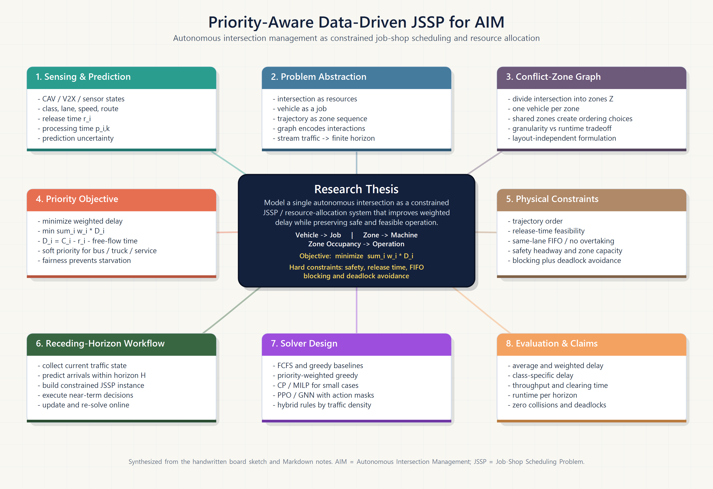
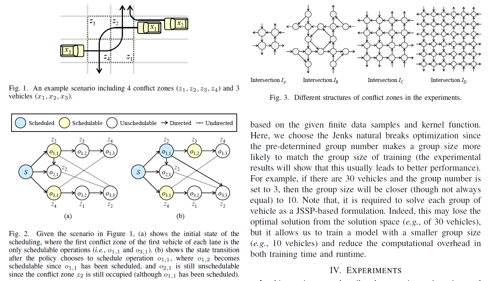

Zhang et al. 2020 and Huang et al. 2023: JSSP-RL to AIM Reading Notes
JSSP Disjunctive graph PPO/GNN Autonomous intersection management Priority-aware scheduling
1. Executive Summary / 总体摘要
ENZhang et al. 2020 is the methodological parent: it learns priority dispatching rules for standard JSSP by representing a partial schedule as an evolving disjunctive graph and training a GIN/PPO policy to select the next eligible operation.
Huang et al. 2023 is the direct AIM bridge: it maps graph-based intersection scheduling to a constrained JSSP, adds traffic-specific constraints, and trains PPO to schedule vehicle-zone operations. The paper also introduces grouping by vehicle arrival time so a trained model can be applied to continuous traffic streams.
Your research can stand on both: keep the graph/JSSP/RL structure, then add heterogeneous vehicle priority, weighted/fair delay, trajectory-predicted zone occupation times, and receding-horizon execution.
中文Zhang et al. 2020 是方法论基础：它把 JSSP 的部分调度状态表示为不断演化的析取图，用 GIN/PPO 学习“下一步调度哪个可执行 operation”的 dispatching rule。
Huang et al. 2023 是和自动交叉口管理最直接的桥梁：它把 graph-based intersection scheduling 转换成带约束的 JSSP，加入 blocking、deadlock、arrival time 等交通约束，并用 PPO 调度 vehicle-zone operations。它还用 arrival time grouping 处理连续到达的车辆流。
你的研究可以在这两篇之上扩展：保留 graph/JSSP/RL 框架，再加入异构车辆优先级、weighted/fair delay、轨迹预测得到的冲突区占用时间，以及 receding-horizon 在线调度。
2. Paper 1: Zhang et al. 2020 Section-by-Section Review
Abstract and Introduction
Zhang et al. start from a practical weakness of hand-designed priority dispatching rules. Traditional PDRs are fast and interpretable, but their quality depends on expert design and may not generalize across JSSP instances. The paper proposes to learn dispatching rules end-to-end with reinforcement learning.
The central claim is not that RL directly solves JSSP by search. Instead, RL learns a policy that imitates the role of a dispatching rule: at each step, choose the next eligible operation, then schedule it as early as feasible on the corresponding machine.
Zhang et al. 的出发点是传统 priority dispatching rules 的局限。PDR 速度快、好实现，但依赖人工经验，对不同规模和分布的 JSSP 泛化有限。论文用强化学习自动学习 dispatching rule。
它不是用 RL 直接做完整搜索，而是让 RL 学一个“下一步选哪个 operation”的规则。选中 operation 后，再把它放到对应 machine 上最早可行的时间位置。
Related Work
The related-work section positions the paper against generic combinatorial optimization learning and older scheduling-learning methods. A key critique is that many earlier approaches use fixed-size feature arrays, image-like states, or manually engineered scheduling features.
Zhang's advantage is the disjunctive graph representation: it carries precedence and machine-conflict structure and can be processed by shared GNN parameters, making the policy size-agnostic.
Related Work 主要把论文放在组合优化学习和调度学习文献中比较。作者指出很多旧方法使用固定维度状态、图像式状态，或者人工设计特征，难以自然扩展到不同 job/machine 数量。
Zhang 的优势是使用 JSSP 的 disjunctive graph：图里同时包含 job precedence 和 machine conflict。GNN 参数共享后，策略可以处理不同规模的实例。
Preliminaries: JSSP and Disjunctive Graph
| Concept | Meaning in Zhang 2020 | Why it matters for AIM |
|---|---|---|
| Job | A sequence of operations that must follow a fixed order. | A vehicle follows a fixed route through conflict zones. |
| Machine | A resource that can process one operation at a time. | A conflict zone can be occupied by only one vehicle at a time. |
| Conjunctive arcs | Directed arcs for within-job operation precedence. | Trajectory-order and same-lane FIFO constraints. |
| Disjunctive arcs | Undirected arcs between operations sharing a machine. | Potential conflict-zone ordering decisions. |
| Solution | Orient disjunctive arcs so the schedule becomes feasible. | Decide vehicle passing order through shared zones. |
中文解释这一节最重要的是图结构。JSSP 的解可以看成“给所有共享 machine 的冲突边定方向”。AIM 中也类似：两个车如果需要同一个 conflict zone，调度器必须决定谁先过。
Method 4.1: MDP Formulation
| RL component | Zhang et al. 2020 design | Interpretation |
|---|---|---|
| State | Current disjunctive graph with directed assigned arcs and remaining unresolved machine conflicts. Each operation has scheduled indicator and completion lower-bound feature. | The policy sees both graph structure and partial-schedule timing information. |
| Action | Choose one eligible operation whose predecessor has already been scheduled. | The action space changes over time and is bounded by the number of jobs ready to move. |
| Transition | Place the selected operation at the earliest feasible machine slot and update graph edge directions according to temporal order. | Action does not directly pick a start time; the environment computes the earliest feasible slot. |
| Reward | Quality difference between two partial schedules, using a lower bound of makespan. | Maximizing cumulative reward aligns with minimizing final makespan. |
| Policy | Stochastic policy over currently eligible operations. | A learned PDR: it outputs a probability distribution instead of a hand-written priority score. |
中文解释Zhang 的 MDP 设计非常适合迁移到你的问题：state 是图，action 是选 operation，transition 由环境安排最早可行时间，reward 体现目标函数变化。你的目标不是 makespan，而是 weighted delay，所以 reward 要相应改成 weighted delay 的增量。
Method 4.2 and 4.3: GIN Policy and PPO Training
The policy uses a Graph Isomorphism Network to embed operation nodes. The graph-level embedding is pooled from node embeddings, and the action score for an eligible operation is computed from its node embedding plus the graph embedding.
The actor chooses operations; the critic estimates cumulative reward from the graph embedding. PPO is used as the actor-critic training algorithm. This design is attractive for AIM because intersection instances can vary by number of vehicles, number of conflict zones, and number of unresolved conflicts.
策略网络使用 Graph Isomorphism Network 编码 operation 节点。全局 graph embedding 由节点 embedding pooling 得到；每个候选 action 的分数由该 operation 的节点 embedding 和全局 graph embedding 一起计算。
Actor 负责选 operation，critic 用 graph embedding 估计累计 reward。训练算法使用 PPO。这个设计对 AIM 有吸引力，因为不同 horizon 中车辆数、冲突区数、冲突边数都会变化。
Experiments and Conclusion
The experiments compare the learned policy with classical dispatching rules and optimization baselines on generated and benchmark JSSP instances. The important takeaway for this project is generalization: a policy trained on smaller instances can still be useful on larger instances because the GNN policy is not tied to a fixed input size.
For your work, this supports training on manageable synthetic traffic groups and testing on larger or denser horizons, while still keeping feasibility checks outside the neural network.
实验部分把 learned policy 和传统 dispatching rules、优化基准比较。对你最有用的结论是泛化能力：由于 GNN 策略不是固定输入维度，较小实例训练出的 policy 可以迁移到更大实例上。
对你的项目来说，这支持先用较小 synthetic traffic groups 训练，再测试更大、更密集的 horizon，但安全约束仍然应由环境和可行性检查保证。
3. Paper 2: Huang et al. 2023 Section-by-Section Review
Abstract and Introduction
Huang et al. propose a centralized RL-based intersection manager. The paper defines graph-based intersection scheduling, transforms it into constrained JSSP, models the scheduling process as an MDP, trains with PPO, and uses grouping to handle vehicle streams.
The paper's core motivation is that graph-based intersection scheduling can flexibly represent different conflict scenarios, but the scheduling problem becomes hard under dense traffic. Learning a dispatching policy can help when simple greedy rules become weak.
Huang et al. 提出一个 centralized RL-based intersection manager。论文把 graph-based intersection scheduling 转成 constrained JSSP，用 MDP 表示调度过程，用 PPO 训练，并通过 grouping 处理连续车辆流。
核心动机是 graph-based intersection model 可以表达各种冲突场景，但高密度交通下调度变难。学习型 dispatching policy 在冲突密集时可能比简单 greedy 更有效。
Background: Graph-Based AIM and JSSP
The graph-based AIM model divides an intersection into conflict zones. A vertex represents a vehicle-conflict-zone pair, and edges describe timing relationships. If the passing orders are safe and deadlock-free, collision-freeness follows from one-vehicle-per-zone occupation.
The JSSP background gives the mapping: vehicle as job, conflict zone as machine, zone traversal as operation, and traversal time as processing time.
Graph-based AIM 把交叉口划分成 conflict zones。图节点可以理解为 vehicle-conflict-zone pair，边表示 timing relationship。只要 passing order 满足安全和 deadlock-free，冲突区同一时刻只允许一辆车就能保证 collision-free。
JSSP 背景给出了映射：vehicle 是 job，conflict zone 是 machine，穿过某个 zone 是 operation，穿越时间是 processing time。
Approach A: Problem Statement
| Huang component | Meaning | Extension opportunity |
|---|---|---|
| Intersection tuple | An intersection is represented by conflict zones and feasible trajectories. | Add zone granularity study and data-driven conflict-zone occupation time. |
| Vehicle tuple | Vehicle includes earliest arrival time and trajectory. | Add class, priority weight, length, and motion features. |
| Blocking constraint | A vehicle cannot be removed from its current physical zone while waiting. | Use buffer zones or conservative release rules in the first simulator. |
| Deadlock constraint | Actions that create circular waiting must be excluded. | Implement graph cycle check as an action mask. |
| Arrival constraint | Operations cannot start before vehicle arrival. | Use predicted arrivals and test noise robustness. |
| Objective | Minimize total vehicle delay rather than only makespan. | Replace with weighted/fair delay for heterogeneous vehicles. |
Approach B: RL-Based Methodology
| RL component | Huang et al. 2023 design | How to adapt for your project |
|---|---|---|
| State | Current graph/JSSP representation of the partial solution. Operation features include scheduled status and earliest completion information. | Add vehicle class, priority weight, predicted arrival uncertainty, and resource occupancy/blocking features. |
| Action | Choose a possible operation from the current action set. | Mask actions violating trajectory precedence, same-lane FIFO, release time, blocking, deadlock, and safety headway. |
| Transition | Assign the selected operation the earliest possible start time and update graph temporal relations. | Use predicted conflict-zone occupation times and re-plan under receding horizon. |
| Reward | Extra delay introduced by the selected action. | Use negative incremental weighted delay, with fairness/stability penalties as optional terms. |
| Policy/training | Graph neural policy trained with PPO. | Start with baselines; add PPO/GNN after the feasibility checker is reliable. |
Approach C: Grouping Strategy
Because vehicles arrive as a stream, Huang groups vehicles according to arrival times and applies a trained model group by group. This addresses two problems: PPO training becomes harder with larger groups, and real traffic is not one fixed static JSSP instance.
For your project, grouping should be treated as a form of receding-horizon construction. The group can be defined by arrival-time clusters, a fixed prediction horizon, or a maximum active-vehicle count.
由于车辆连续到达，Huang 根据 arrival time 对车辆分组，然后逐组应用训练好的模型。这解决两个问题：大 group 训练更慢更难；真实交通也不是一次性静态 JSSP。
在你的项目里，grouping 可以看成 receding-horizon construction 的一种形式。分组可以基于 arrival-time clusters、固定预测窗口，或者最大 active vehicle 数量。
Experiments and Conclusion
Huang evaluates different intersection structures, traffic densities, and group sizes, comparing PPO with improved greedy and small-instance optimal solutions. The key observation is density-dependent: PPO tends to be more useful under high traffic density, while iGreedy can be strong when density is low.
This directly motivates a hybrid strategy in your thesis: use simple safe heuristics under sparse traffic and switch to learned or optimization-aided dispatching under high contention.
Huang 的实验比较不同交叉口结构、交通密度和 group size，并将 PPO 与 iGreedy、optimal solutions 比较。关键发现是和密度有关：高密度时 PPO 更有优势，低密度时 iGreedy 可能已经很强。
这直接支持你的 hybrid strategy：低冲突时使用安全、简单的 heuristic；高冲突时切换到 learning-based 或 optimization-aided dispatching。
4. Direct Comparison: Zhang vs Huang vs Your Research
| Dimension | Zhang et al. 2020 | Huang et al. 2023 | Your priority-aware AIM direction |
|---|---|---|---|
| Domain | Generic manufacturing-style JSSP. | Single-intersection AIM mapped to constrained JSSP. | Heterogeneous CAV intersection scheduling. |
| State/observation | Disjunctive graph, scheduled indicator, completion lower bound. | Graph/JSSP partial schedule for vehicle-zone operations. | Graph state plus vehicle class, priority, prediction, occupancy, and blocking features. |
| Action | Select eligible operation. | Select feasible operation under traffic constraints. | Select masked feasible vehicle-zone operation or vehicle dispatch decision. |
| Reward/objective | Improvement in makespan lower-bound quality. | Extra delay introduced by action; total delay objective. | Negative incremental weighted delay plus optional fairness/stability penalties. |
| Safety | Standard JSSP machine capacity and precedence feasibility. | Blocking, deadlock, arrival constraints added to JSSP. | Safety masks, headway margins, deadlock checks, same-lane FIFO, and commitment windows. |
| Stream handling | Mostly static JSSP instances. | Arrival-time grouping for vehicle streams. | Receding-horizon grouping with prediction-noise robustness. |
| Gap | No traffic-specific priority or physical intersection constraints. | No full heterogeneous priority/fairness formulation. | Combine priority-aware objective, physical heterogeneity, prediction, and online scheduling. |
5. Visual Map for Your Project
Existing repository concept map

Existing JSSP/RL sketch

6. Research Gap and Problem Formulation
Gap statement
Existing work links graph-based intersection management, JSSP, and PPO, but does not fully combine heterogeneous vehicle priority, weighted/fair delay, trajectory-predicted conflict-zone occupation time, and online receding-horizon execution.
A precise research problem is: how can a single CAV intersection be formulated as a priority-aware constrained JSSP whose dispatching actions are safety-masked, whose objective minimizes weighted delay without starvation, and whose online schedule is updated from predicted arrivals and zone occupation times?
现有工作已经把 graph-based intersection management、JSSP 和 PPO 联系起来，但还没有系统整合异构车辆优先级、weighted/fair delay、基于轨迹预测的冲突区占用时间，以及在线 receding-horizon execution。
更精确的研究问题是：如何把单个 CAV 交叉口建模为 priority-aware constrained JSSP，使 dispatching action 经过安全 mask，目标函数最小化 weighted delay 且避免 starvation，并根据预测 arrival 和 zone occupation time 在线更新调度？
| Research question | Technical answer to develop | First validation |
|---|---|---|
| How should priority enter the scheduler? | Weighted delay for buses/person-delay, physical processing/headway for trucks, hard or high-weight emergency priority. | Compare equal-priority vs weighted-priority scenarios. |
| How can safety be preserved with RL? | Use feasibility masks and graph deadlock checks before action selection or commitment. | Zero collisions and zero deadlocks in all simulated runs. |
| When is PPO actually useful? | Test density-dependent performance and hybrid switching. | Low/medium/high traffic density experiments. |
| How should continuous streams be handled? | Arrival-time grouping plus receding-horizon commitment windows. | Compare fixed group size, arrival clusters, and horizon windows. |
| How robust is prediction-based scheduling? | Add margins and re-plan frequently under noisy arrival/CZOT estimates. | Noisy prediction stress tests. |
7. Suggested Technical Roadmap / 技术路线
| Stage | English plan | 中文计划 |
|---|---|---|
| 1 | Define one four-way conflict-zone graph and synthetic vehicle generator. | 先定义一个四向交叉口冲突区图，并生成 synthetic vehicle stream。 |
| 2 | Implement feasibility checker: release time, zone capacity, FIFO, blocking, deadlock. | 实现可行性检查：arrival/release、zone capacity、same-lane FIFO、blocking、deadlock。 |
| 3 | Implement FCFS, greedy, priority-greedy, and deadlock-aware greedy. | 先做 FCFS、greedy、priority-greedy、deadlock-aware greedy，不要急着训练 RL。 |
| 4 | Add small-instance CP-SAT or MILP benchmark for optimality-gap checking. | 小规模实例加入 CP-SAT/MILP benchmark，用来验证 heuristic 和 RL 的 gap。 |
| 5 | Add receding-horizon grouping and prediction-noise experiments. | 加入 rolling/receding horizon、arrival grouping 和 prediction noise 鲁棒性测试。 |
| 6 | Add PPO/GNN after baselines and constraint checks are reliable. | 等 baseline 和安全检查稳定后，再加入 PPO/GNN policy。 |
8. Short Takeaway / 一句话结论
Zhang teaches how to learn graph-based JSSP dispatching; Huang teaches how to transform graph-based AIM into constrained JSSP and use PPO with arrival grouping. Your strongest next contribution is not just "using RL", but designing a priority-aware, safety-masked, receding-horizon constrained JSSP framework for heterogeneous CAV intersections.
Zhang 告诉我们如何学习 graph-based JSSP dispatching；Huang 告诉我们如何把 graph-based AIM 转成 constrained JSSP 并用 PPO 和 arrival grouping。你的最强贡献不是单纯“用 RL”，而是设计一个面向异构 CAV 的 priority-aware、safety-masked、receding-horizon constrained JSSP 框架。